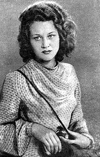

Ліна Василівна Костенко (19 березня 1930, Ржищів, Київська область) — українська письменниця-шістдесятниця, поетеса. Мати Оксани Пахльовської. Лауреат Шевченківської премії (1987), Премії Антоновичів (1989), премії Петрарки (1994).
У радянські часи брала активну участь у дисидентському русі, за що була надовго виключена з літературного процесу. Авторка поетичних збірок«Над берегами вічної ріки» (1977), «Неповторність» (1980), «Сад нетанучих скульптур» (1987), роману у віршах «Маруся Чурай» (1979, Шевченківська премія 1987), поеми «Берестечко» (1999, 2010). 2010 року опублікувала перший прозовий роман «Записки українського самашедшого», що став одним з лідерів продажу серед українських книжок у 2011 році.
Почесний професор Києво-Могилянської академії, почесний доктор Львівського та Чернівецького університетів.
Відмовилась від звання Героя України.